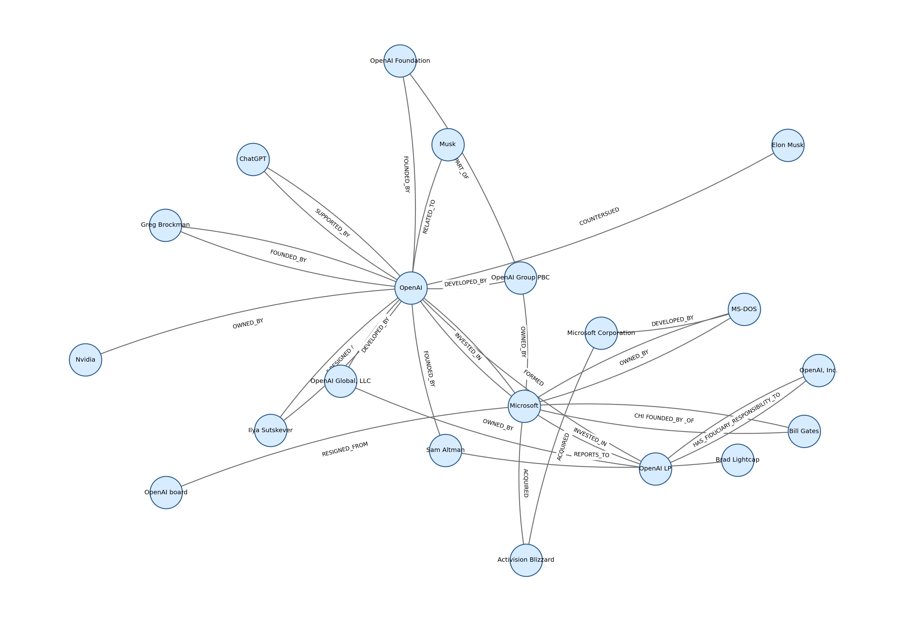

Interactive Graph
Nodes are sized by degree. This view shows the highest-degree slice of the input graph to keep it readable.
Graph Summary
Top Relations
Top Nodes
| node | degree |
|---|---|
| Microsoft | 199 |
| OpenAI | 177 |
| Microsoft Corporation | 20 |
| Sam Altman | 7 |
| OpenAI board | 7 |
| ChatGPT | 6 |
| OpenAI LP | 5 |
| Bill Gates | 5 |
| OpenAI Global, LLC | 4 |
| Elon Musk | 4 |
| Ilya Sutskever | 4 |
| Greg Brockman | 4 |
| Nvidia | 4 |
| OpenAI Group PBC | 4 |
| Brad Lightcap | 4 |
| MS-DOS | 4 |
| Activision Blizzard | 4 |
| OpenAI, Inc. | 3 |
Benchmark Questions
Question Detail
Per-question Metrics
Source Coverage
Shows how much of each Wikipedia article is represented by chunks and extracted triples. Low triple coverage means the current `MAX_CHUNKS_FOR_EXTRACTION` limited extraction before reaching that topic.
| source_title | chunks | triples | triples_per_chunk |
|---|---|---|---|
| OpenAI | 23 | 328 | 14.261 |
| Microsoft | 29 | 315 | 10.862 |
| 32 | 0 | 0.0 | |
| Amazon Web Services | 13 | 0 | 0.0 |
| Cloud computing | 16 | 0 | 0.0 |
| Artificial intelligence | 36 | 0 | 0.0 |
| Machine learning | 24 | 0 | 0.0 |
| Kubernetes | 14 | 0 | 0.0 |
| Docker (software) | 5 | 0 | 0.0 |
| PostgreSQL | 17 | 0 | 0.0 |
| Python (programming language) | 17 | 0 | 0.0 |
| Microservices | 7 | 0 | 0.0 |
| DevOps | 7 | 0 | 0.0 |
| GitHub | 11 | 0 | 0.0 |
| Linux | 18 | 0 | 0.0 |
Static Graph Image
